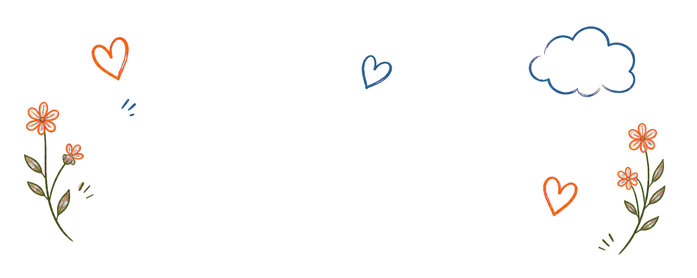

Animals
Meet adoptable animals, sanctuary residents, rehabilitation patients, and success stories.
Meet the animals →Mesa, Arizona • Established 2018
From horses to hummingbirds, every animal deserves compassion, skilled care, and the chance to heal.


Every life. Every story. Every day matters. ♡
Wild • Domestic • Neonatal • Special Needs
From urgent rescue and specialized medical care to rehabilitation, release, and lifelong sanctuary, every animal receives the care they need to heal and thrive.
Meet Crystal and discover the heart behind the Haven →Meet adoptable animals, sanctuary residents, rehabilitation patients, and success stories.
Meet the animals →Found a wild animal? Learn what to do before feeding, moving, or handling it.
Get wildlife guidance →Volunteer, share the mission, support the wishlist, or become a community sponsor.
Ways to help →Sample profiles
These stock photographs, names, and stories are fictional placeholders showing how real profiles will look.

Recovering from a wing injury and growing stronger every day.

A gentle permanent resident who loves quiet mornings and fresh greens.

Rescued as a youngster and now thriving with specialized daily care.

Healed, regained strength, and returned to the water where she belongs.

The newest patient, currently resting while Crystal completes an assessment.
Education saves lives
Please contact a licensed rehabilitator before feeding, moving, or attempting to care for wildlife.
Every dollar helps
Your support provides food, formula, medical supplies, safe habitats, and around-the-clock care.